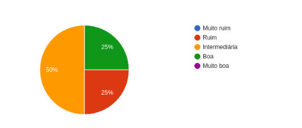
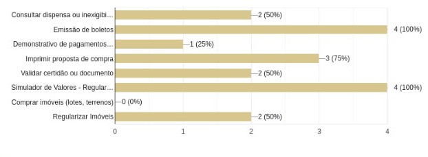

Questionário
Introdução
Este artefato tem por objetivo demonstrar a aplicação da técnica de elicitação escolhida de questionário, passando pelas perguntas escolhidas, detalhes de uso e resultados obtidos.
Metodologia
A técnica de elicitação por questionário é uma abordagem estruturada para coletar informações de um grupo de pessoas por meio de perguntas pré-definidas, o que a torna uma ferramenta valiosa para pesquisa e coleta de informações em uma variedade de contextos.e utilizamos principalmente por conta da Eficiência na Coleta de Dados,Facilidade de Distribuição,Custo-Benefício e a Facilidade de Análise.
Aplicação da técnica
Durante a utilização da técnica de elicitação questionários disponibilizamos um forms com as perguntas abaixo, com o objetivo de extrair as informações do usuários do site da terracap, abaixo de cada pergunta já se encontra seu respectivo resultado:
Perguntas
Qual sua idade?
25% dos participantes têm entre 18 a 24, 50% têm entre 35 a 44 anos, enquanto 33% se encontra na faixa etária entre 45 a 55 anos de idade.

Qual seu sexo?
75% dos participantes declararam serem do sexo masculino enquanto 25% declararam serem do sexo feminino.

Qual seu grau de escolaridade?
50% dos participantes tem ensino superior completo e 50% possuem ensino superior incompleto.

Em qual região do DF você mora?
Resposta aberta levada em conta na análise, a grande maioria dos usuários declaram que se encontram na região de Arniqueiras e Santa Maria.
Por onde você mais utiliza o site da Terracap?
100% dos participantes da pesquisa utilizam mais o site pelo computador.

Qual sua experiência ao utilizar o site da Terracap?
50% dos participantes declaram terem uma experiência intermediária ao utilizarem o site da terracap enquanto, 25% relataram uma experiência boa e os outros 25% declararam uma experiência ruim.

Qual(is) funcionalidade(s) do site você já utilizou?

Você acha que o design do site facilita encontrar as funcionalidades disponíveis?
50% dos participantes relataram que não acham que o design do site facilita o encontro de funcionalidades, enquanto os outros 50% disseram que talvez.

Existe alguma funcionalidade que você gostaria a mais no site?
Pergunta aberta levada em consideração para a análise dos resultados, porém a grande maioria dos participantes relataram não conseguir pensar em mais uma funcionalidade.
Como você julga a eficácia do suporte e das informações disponíveis no site
50% dos participantes relataram que acham ruim a eficácia de suporte e das informações disponíveis no site, enquanto 50% relataram que acham essa eficácia média.

Existem integrações com outros sistemas ou entidades governamentais que você gostaria que este site suportasse?
Resposta aberta levada em consideração na análise de resultados, porém a maioria dos participantes relataram que gostariam de algum tipo de integração com sistemas bancários.
Alguma outra necessidade ou consideração importante que você gostaria de mencionar em relação ao site?
Resposta aberta levada em consideração na análise de resultados. A maioria dos participantes disse que não tem nada a acrescentar.
Histórico de Versão
| Versão | Data | Descrição | Autor(es) | Revisor(es) |
|---|---|---|---|---|
1.0 |
06/04/2024 | Criação do documento | Papa | Foxtrot |
1.1 |
06/04/2024 | Correções de Padrão | João Lucas | Papa |